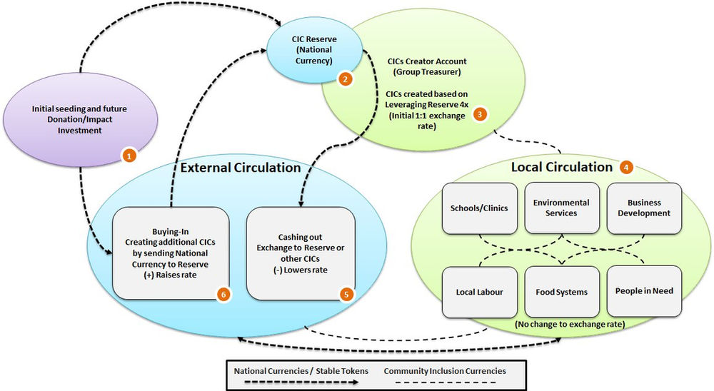
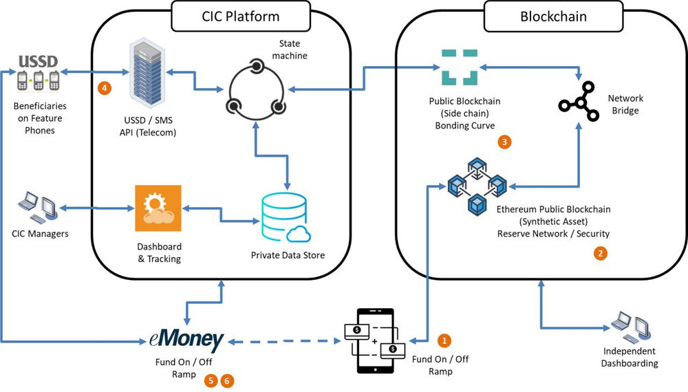
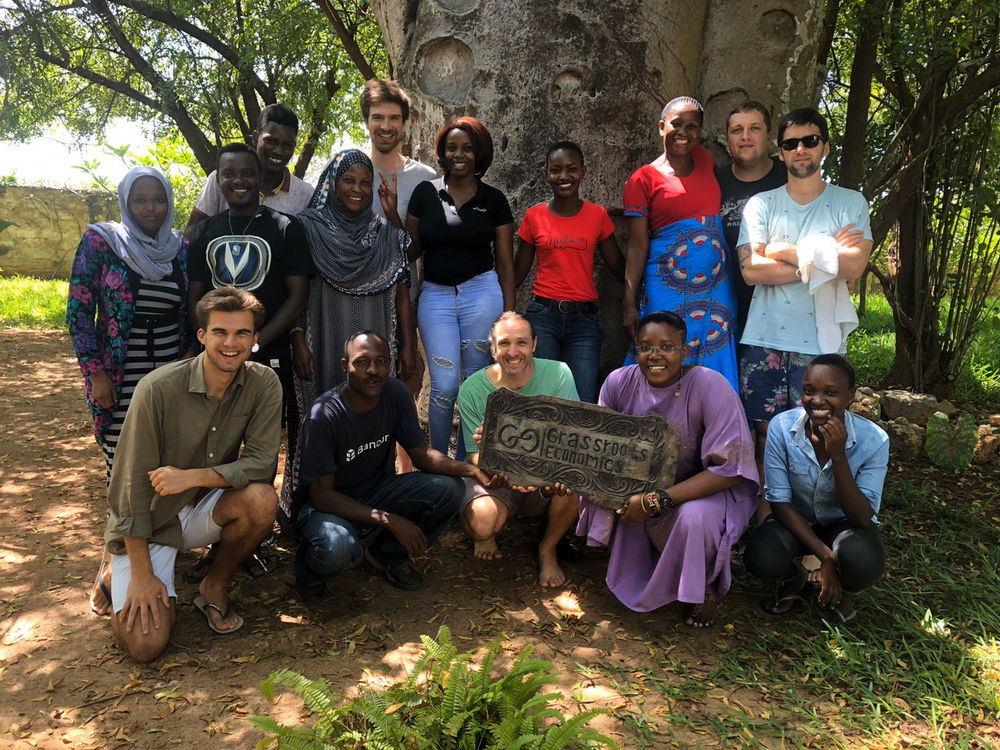

Community Inclusion Currencies are Now Open Source
Today the Grassroots Economics and volunteers spanning 5 countries gathered in Kenya to launch Community Inclusion Currency (CIC) trading on a new open source platform!
We’ve been waiting for this since 2015 when we first started using USSD to connect simple feature phones to a digital ledger. The dream to be able to use a system we could share freely and build on with others is finally here. This is still just the beginning, but I am so grateful for the Red Cross teams for making this happen.
This means we can fully customize the system to:
- Use any blockchain, smart contracts or reserve tokens.
- From virtual backing to on-chain collateral for CICs
- Improve speeds and usability:
- Wallet Creation and Registration process: 15 minutes to 2 minutes
- Transaction and Validation Process: 2+ minutes to 5 seconds
- Provide real time support for user challenges
These may sound like small improvements, but because of them our current, 8000+ and growing, users will be able to trade and create CICs to support their local communities across Kenya. CICs allow users to easily create shares of pooled funds in national currency as a medium of exchange for local goods and services. We’re so appreciative to stand on the shoulders of giants like Eyal Hertzog (and the Bancor team's open source smart contract), as well as Friedrich Hayek and Bernard Lietear with their vision for multi-currency ecosystems.
What’s left to do?
- Analysis and Modeling: BlockScience and researchers with on the ground pioneer communities
- Improving the platform: Volunteer programmers and teams with security audits while reacting to user feedback
- Dashboarding and Support: Gender, Business types, transaction data, SDG Impacts. How can detailed CIC economic data be used to help marginalized economies become resilient?
- User Guides and Materials: Red Cross and users, translations, localizations, modular systems and local customizations
Finalizing the above list in 2020 will push CICs farther in a year than we’ve been able to move for the last ten years.
Note that we are rebuilding the code base and will not be using Sempo's system in 2021.
  